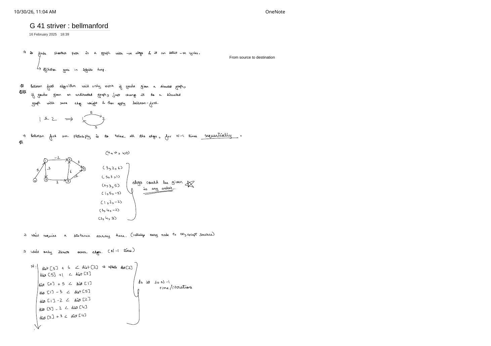
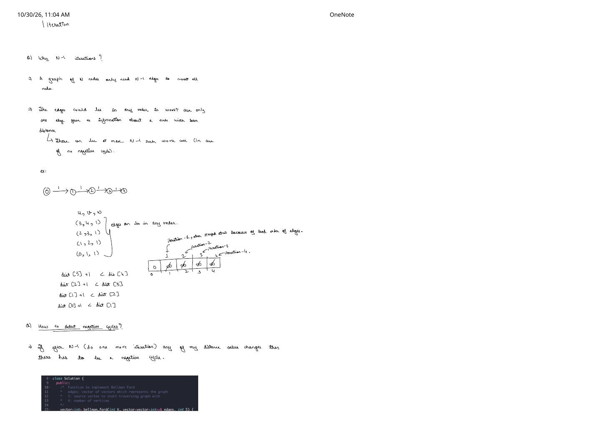
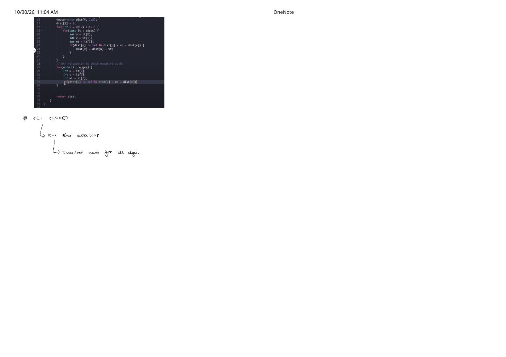

Bellman–Ford Algorithm: Negative Edge Weights & Negative Cycle Detection (Striver G-41)
Expanded from handwritten competitive coding study note: 04_G_41_striver_bellmanford.pdf
The moment a graph contains negative edge weights ($w(u, v) \lt 0$), Dijkstra's algorithm loses its greedy foundation — either freezing in an infinite loop on negative cycles or prematurely settling suboptimal paths. The Bellman–Ford algorithm (Striver G-41) solves Single-Source Shortest Paths (SSSP) on arbitrary signed directed graphs in $\mathcal{O}(V \cdot E)$ time and cleanly detects whether any negative-weight cycle is reachable from the source.
1. Core Philosophy & Directed vs. Undirected Graphs
Bellman–Ford Core Philosophy (Page 1)
Given a directed graph with $N = V$ vertices ($0$ to $V - 1$), an edge list of $E$ directed triples $(u, v, \text{wt})$ in any arbitrary order, and a source vertex $S$:
- Initialize a distance array
dist[0..V-1] = ∞(1e8in GFG) exceptdist[S] = 0. - Relax every edge sequentially for $V - 1$ iterations: $$\text{if } \text{dist}[u] \neq \infty \text{ and } \text{dist}[u] + \text{wt} \lt \text{dist}[v] \;\implies\; \text{dist}[v] \leftarrow \text{dist}[u] + \text{wt}$$
- Run one extra ($V$-th) relaxation pass: if any
dist[v]still decreases, a reachable negative cycle exists!
Directed vs. Undirected Rule (Page 1): Bellman–Ford operates strictly on directed edges. As sketched on page 1, if you are given an undirected edge $1 \leftrightarrow 2$ of non-negative weight $5$, convert it into two directed edges $1 \xrightarrow{5} 2$ and $2 \xrightarrow{5} 1$. What if an undirected graph has a negative edge $1 \leftrightarrow 2$ of weight $-5$? Converting it yields $1 \xrightarrow{-5} 2$ and $2 \xrightarrow{-5} 1$, whose 2-step round-trip $1 \to 2 \to 1$ has total weight $-10 \lt 0$ — an immediate negative cycle, which Bellman–Ford's $V$-th pass will rightly flag!
2. Why Simpler Approaches Fail on Signed Graphs
| Approach | When It Works | Why It Fails on General Signed Graphs |
|---|---|---|
| 1-Pass Topological Relaxation | Directed Acyclic Graphs (DAGs) with any weights ($w \in \mathbb{R}$) in $\mathcal{O}(V + E)$ | General graphs have cycles (positive or zero-weight cycles are totally legal!), so no topological ordering exists. |
| Min-Heap Dijkstra | Any graph with $w \ge 0$ in $\mathcal{O}(E \log V)$ | Assumes popping minimal dist[u] settles $u$ forever; a downstream negative edge $x \xrightarrow{-10} u$ invalidates already-settled vertices and loops infinitely on negative cycles. |
| 1 or 2 Passes Over Edge List | Only when input edges happen to appear in shortest-path order | Edges can be given in any adversarial order (e.g., reverse of the shortest path), advancing the frontier by only 1 hop per pass! |
| Bellman–Ford ($V - 1$ Passes + $V$-th Check) | All directed graphs ($w \in \mathbb{R}$, cycles allowed) | Guarantees exact shortest paths in $\mathcal{O}(V \cdot E)$ and catches negative cycles on pass $V$. |
3. Step-by-Step Dry Run on the 6-Node Signed Graph (Page 1)
Let us trace the exact 6-vertex directed graph ($V = 6$, source $S = 0$) and scrambled 7-edge list from page 1 of the handwritten notes:
4 is $0 \xrightarrow{5} 1 \xrightarrow{-3} 5 \xrightarrow{1} 3 \xrightarrow{-2} 4$ of total weight $5 - 3 + 1 - 2 = 1$ (beating $0 \to 1 \to 2 \to 4$ of cost $5 - 2 + 3 = 6$).Suppose the edges arrive in the scrambled sequence written on page 1:
edges = [ (3,2,6), (5,3,1), (0,1,5), (1,5,-3), (1,2,-2), (3,4,-2), (2,4,3) ]
| Pass | Edge-by-Edge Relaxations That Succeed | dist[0..5] After Pass |
|---|---|---|
| Init | dist[0] = 0, all others $\infty$ |
[0, ∞, ∞, ∞, ∞, ∞] |
| Iteration 1 | (3,2,6) & (5,3,1) skip ($\text{dist}[3]=\text{dist}[5]=\infty$).(0,1,5) $\implies \text{dist}[1]=5$; then in the same pass:(1,5,-3) $\implies \text{dist}[5]=2$; (1,2,-2) $\implies \text{dist}[2]=3$; (2,4,3) $\implies \text{dist}[4]=6$. |
[0, 5, 3, ∞, 6, 2] |
| Iteration 2 | Now $\text{dist}[5]=2$ is ready at the top of the loop!(5,3,1) $\implies \text{dist}[3]=2+1=3$; later in the same pass:(3,4,-2) $\implies \text{dist}[4]=3+(-2)=\mathbf{1} \lt 6$ ✓ |
[0, 5, 3, 3, 1, 2] |
| Iterations 3–5 | Zero edges improve ($V - 1 = 5$ passes complete) | [0, 5, 3, 3, 1, 2] |
| Iteration 6 ($V$-th Check) | Zero edges improve $\implies$ no reachable negative cycle! | Return [0, 5, 3, 3, 1, 2] |
4. Why Exactly $N - 1$ Iterations? & Negative Cycle Proof (Page 2)
In the 6-node example above, distances converged in just 2 iterations because several edges happened to sit in favorable relative order. Why must Bellman–Ford run up to $N - 1$ iterations in the worst case? Page 2 constructs the exact adversarial counterexample — a 5-node path ($N = 5$) whose $4$ edges are listed completely backwards:
Inductive Proof of $V - 1$ Sufficiency & $V$-th Pass Negative-Cycle Theorem
- Why $V - 1$ Passes Suffice Without Negative Cycles: Any shortest walk in a graph with no negative cycles can have any positive/zero cycle removed without increasing its cost, leaving a simple path. A simple path among $V$ vertices visits at most $V$ distinct vertices, so it contains at most $V - 1$ edges: $S = v_0 \to v_1 \to \dots \to v_m$ ($m \le V - 1$). By induction, pass $i$ relaxes $(v_{i-1}, v_i)$ after $\text{dist}[v_{i-1}]$ has already reached its optimal value in pass $i - 1$. Therefore after $V - 1$ passes, $\text{dist}[v]$ equals the true shortest distance for every reachable vertex!
- Why Any Decrease on Pass $V$ Proves a Negative Cycle: Conversely, if some edge $(u, v, w)$ still satisfies $\text{dist}[u] + w \lt \text{dist}[v]$ on the $V$-th pass, then a walk of $V$ edges from $S$ improved upon every walk of $\le V - 1$ edges. By the Pigeonhole Principle, a $V$-edge walk touches $V + 1$ vertices among only $V$ vertex IDs, so at least one vertex $x$ repeats — forming a cycle $x \rightsquigarrow x$ whose net weight must be strictly negative!
5. Clean C++ Implementation (Striver G-41)
Below is the exact GeeksforGeeks / Striver G-41 C++ implementation from pages 2–3 (plus an optional changed early-exit flag that speeds up sparse test cases while preserving exact behavior):
#include <bits/stdc++.h>
using namespace std;
class Solution {
public:
/* Function to implement Bellman-Ford
* edges: vector of {u, v, wt} representing directed edges
* S: source vertex to start traversing graph with
* V: number of vertices
* Returns shortest distances from S, or {-1} if a negative cycle is reachable from S.
*/
vector<int> bellman_ford(int V, vector<vector<int>>& edges, int S) {
const int INF = 1e8;
vector<int> dist(V, INF);
dist[S] = 0;
// 1. Relax all edges sequentially V - 1 times
for (int i = 0; i < V - 1; i++) {
bool changed = false;
for (const auto& it : edges) {
int u = it[0];
int v = it[1];
int wt = it[2];
if (dist[u] != INF && dist[u] + wt < dist[v]) {
dist[v] = dist[u] + wt;
changed = true;
}
}
if (!changed) break; // already converged; no negative cycle reachable
}
// 2. N-th relaxation pass to check for reachable negative cycles
for (const auto& it : edges) {
int u = it[0];
int v = it[1];
int wt = it[2];
if (dist[u] != INF && dist[u] + wt < dist[v]) {
return {-1};
}
}
return dist;
}
};6. Time & Space Complexity Proof (Page 3)
Complexity Breakdown
- Time Complexity — $\mathcal{O}(V \cdot E)$: The outer loop executes $V - 1$ times, and the inner loop scans all $E$ edges in $\mathcal{O}(1)$ each, followed by a single $\mathcal{O}(E)$ negative-cycle verification pass: $(V - 1)E + E = V \cdot E = \mathcal{O}(V \cdot E)$. On a dense graph where $E \approx V^2$, this reaches $\mathcal{O}(V^3)$.
- Auxiliary Space — $\mathcal{O}(V)$: Only the 1D
distvector of length $V$ is allocated.
7. Key Edge Cases & Contest Nuances
Three Traps That Break Bellman–Ford Submissions
- Forgetting the
dist[u] != INFGuard: Suppose vertex $u$ is completely unreachable from $S$ (dist[u] = 1e8) and there is a negative edge $u \xrightarrow{-5} v$ where $v$ is also unreachable (dist[v] = 1e8). Withoutdist[u] != INF,1e8 + (-5) = 99999995 < 1e8evaluates to true — both corrupting unreachable distances and falsely triggering the $V$-th pass negative-cycle detector on an unreachable component! - Detecting Negative Cycles Anywhere in a Disconnected Graph: Initializing only
dist[S] = 0detects negative cycles reachable from $S$. If a problem asks "Does the graph contain a negative cycle anywhere (even disconnected from node $0$)?", initialize alldist[0..V-1] = 0(equivalent to adding a virtual super-source $S^*$ with $0$-weight edges to every vertex) and run $V$ passes! - At-Most-$K$-Stops Variant (e.g., Cheapest Flights Within $K$ Stops, LC 787): Notice in Iteration 1 of our dry run that
(0,1,5)immediately cascaded into(1,5,-3)within the same pass. For standard Bellman–Ford, intra-pass cascading is harmless (and helpful!). However, if a problem restricts paths to at most $K$ edges, you MUST read from the previous pass's snapshotprevDist[u] + wt < curDist[v]so paths cannot chain multiple hops in a single pass.
From the Handwritten Notes
View original handwritten page — Bellman–Ford (G-41) Page 1: Negative edges, undirected conversion & 6-node setup


04_G_41_striver_bellmanford.pdf: Why Dijkstra enters an infinite loop, converting undirected edges to bidirectional directed pairs, and relaxing the 6-vertex example sequentially.View original handwritten page — Bellman–Ford (G-41) Page 2: Why $N - 1$ iterations & negative-cycle check


04_G_41_striver_bellmanford.pdf: Adversarial 5-node reverse-ordered edge chain proving $N - 1$ iterations are necessary, plus the $N$-th iteration negative-cycle rule.View original handwritten page — Bellman–Ford (G-41) Page 3: Complete C++ code & $\mathcal{O}(V \cdot E)$ complexity


04_G_41_striver_bellmanford.pdf: Full GFG C++ solution and $\mathcal{O}(V \cdot E)$ outer/inner loop complexity derivation.